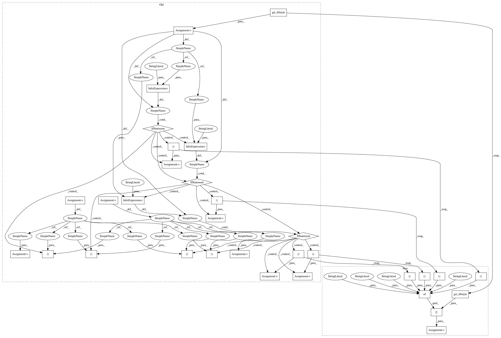

0810bfa2eda0aa041475ee93eb0db42d298340e0,lib/matplotlib/markers.py,MarkerStyle,_set_pentagon,#MarkerStyle#,567
Before Change
self._snap_threshold = 5.0
polypath = Path.unit_regular_polygon(5)
fs = self.get_fillstyle()
if not self._half_fill():
self._path = polypath
else:
verts = polypath.vertices
y = (1 + np.sqrt(5)) / 4.
top = Path([verts[0], verts[1], verts[4], verts[0]])
bottom = Path([verts[1], verts[2], verts[3], verts[4], verts[1]])
left = Path([verts[0], verts[1], verts[2], [0, -y], verts[0]])
right = Path([verts[0], verts[4], verts[3], [0, -y], verts[0]])
if fs == "top":
mpath, mpath_alt = top, bottom
elif fs == "bottom":
mpath, mpath_alt = bottom, top
elif fs == "left":
mpath, mpath_alt = left, right
else:
mpath, mpath_alt = right, left
self._path = mpath
self._alt_path = mpath_alt
self._alt_transform = self._transform
self._joinstyle = "miter"
After Change
bottom = Path(verts[[1, 2, 3, 4, 1]])
left = Path([verts[0], verts[1], verts[2], [0, -y], verts[0]])
right = Path([verts[0], verts[4], verts[3], [0, -y], verts[0]])
self._path, self._alt_path = {
"top": (top, bottom), "bottom": (bottom, top),
"left": (left, right), "right": (right, left),
}[self.get_fillstyle()]
self._alt_transform = self._transform
self._joinstyle = "miter"
In pattern: SUPERPATTERN
Frequency: 4
Non-data size: 32
Instances
Project Name: matplotlib/matplotlib
Commit Name: 0810bfa2eda0aa041475ee93eb0db42d298340e0
Time: 2021-01-26
Author: anntzer.lee@gmail.com
File Name: lib/matplotlib/markers.py
Class Name: MarkerStyle
Method Name: _set_pentagon
Project Name: matplotlib/matplotlib
Commit Name: 0810bfa2eda0aa041475ee93eb0db42d298340e0
Time: 2021-01-26
Author: anntzer.lee@gmail.com
File Name: lib/matplotlib/markers.py
Class Name: MarkerStyle
Method Name: _set_pentagon
Project Name: matplotlib/matplotlib
Commit Name: 0810bfa2eda0aa041475ee93eb0db42d298340e0
Time: 2021-01-26
Author: anntzer.lee@gmail.com
File Name: lib/matplotlib/markers.py
Class Name: MarkerStyle
Method Name: _set_hexagon1
Project Name: matplotlib/matplotlib
Commit Name: 0810bfa2eda0aa041475ee93eb0db42d298340e0
Time: 2021-01-26
Author: anntzer.lee@gmail.com
File Name: lib/matplotlib/markers.py
Class Name: MarkerStyle
Method Name: _set_hexagon2
Project Name: matplotlib/matplotlib
Commit Name: 0810bfa2eda0aa041475ee93eb0db42d298340e0
Time: 2021-01-26
Author: anntzer.lee@gmail.com
File Name: lib/matplotlib/markers.py
Class Name: MarkerStyle
Method Name: _set_star